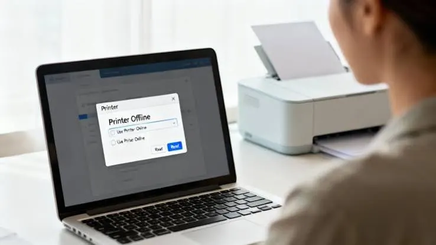
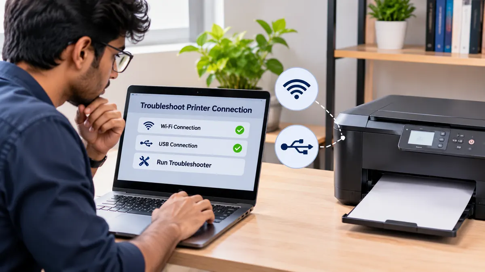

Printers
Printer Offline? 8 Quick Fixes to Get Back to Printing
Is your printer showing offline? Try eight practical checks for power, Wi-Fi, cables, print queues, default settings, drivers and network connections.
Introduction
It can be frustrating when your printer shows as offline, especially if you need to print an important document. The printer may be turned on, however your computer may show that there is no connection. There are a few reasons why this may happen. The most likely reason is that your cables are not plugged in properly or there was a brief network outage. Other reasons could be that the print queue is paused, the wrong printer is being used, the printer driver is out of date or the network address has changed.
Before moving onto more complex solutions, try the following steps. They cover some of the most common problems when connecting to a printer on windows or just a network printer. The menus will vary depending on the version of your OS and the brand of your printer. Please refer to the printers instructions for specifics. If the printer shows a hardware error, paper jam or service notice then first resolve this:

1. Check printer is turned on and no messages are showing.
Ensure that the printer is turned on and the cable is properly connected. Check to see if there are any messages on the printer screen or lights such as paper jam, no paper, cover open, low supplies or error code. Sometimes even if your printer is on, it can be paused waiting for user interaction.
If the printer is frozen please follow the manufacturers instructions for rebooting. Always save any work you are doing and do not unplug whilst it is updating the firmware or carrying out maintenance. Once rebooted, leave the printer to get into the ready state and then try printing.
Ensure that the right paper has been loaded and that the trays are fully inserted. If there is still an error message please refer to your printer manual for the exact error. By fixing the actual error on the printer it may come back online without having to change any settings on your computer.
2. Check Cable/ Wi-Fi
If you have a USB printer ensure the cable is firmly attached. If possible plug into a different USB port. Try not to use a faulty hub. Do not force the connection or use a damaged cable.
If you have a wireless printer ensure it is connected to the correct Wi-Fi. Sometimes a printer can become disconnected due to a router reboot, changed name or password. Check your printers network menu or if your printer allows it, print a network status report.
In most cases the printer and computer will need to be on the same network. If you are on a guest network or some routers have a setting to stop devices seeing each other. If you recently moved the printer to a new room/network please follow the manufacturers instructions to reconnect.

3. Reboot devices
Sometimes rebooting can help with any brief connectivity issues. Save any work you have open and press the power button on the printer to turn it off. Wait for it to turn off. Reboot your computer. If you have a Wi-Fi printer and other devices are having connectivity issues reboot your router following the instructions from your internet provider or router manufacturer.
Once your network is up and running turn the printer on and wait for it to connect. Check to see if your computer can see it. Don’t continually turn devices on and off. If the printer is on a managed office network please check with your IT admin before rebooting any shared devices.
4. Clear print jobs.
If there is a print job stuck in the queue it can cause issues with printing later jobs. Open your print queue. Check that there isn’t a paused print job with an error or waiting infinitely. Only cancel any safe print jobs. If it is a shared printer ask other users.
To open the print queue on Windows go to the printers settings/ print management. Instructions will vary depending on the version. If you cannot cancel the print job try rebooting the printer and computer. If you want to do more advanced solutions such as restarting the Print Spooler service please do this carefully and ideally follow the instructions from official support.
Once cleared try printing a short document. If the same print job keeps getting stuck please check the file, application and driver.
5. Ensure correct printer selected and not paused.
Your computer may have multiple printers saved. This could include old devices, double installations or PDF printing. Ensure you have the correct physical printer selected. If you send a document to a printer that isn’t connected it may seem to disappear.
On Windows open the printer queue/settings. Check that it is not paused or set to ‘use printer offline’. If it is set to use the printer offline uncheck this. The wording will vary depending on the version of windows. Also ensure that the printer has not been set to pause printing.
If you are in an office environment check that the printer name matches the location/asset tag. If there are multiple printers with similar names ask your admin which one to use. By selecting the correct device this can be resolved without reinstalling anything.
6. Check printer driver.
The printer driver allows your OS to communicate with the printer. The driver may be out of date, corrupt or not compatible with the OS after an update. If the basic connection checks aren’t helping please visit the printers official support site. Search for your exact model number and OS.
Only download the driver/software for the model. Don’t use third-party driver websites or any ‘fix all’ utilities. Follow the instructions from the manufacturer. In some cases it can help to delete the old printer and add it again. Be sure you know which printer and driver you have.
If you are using a business computer you may need administrator access to install the driver. Don’t go against any security policies. If it was working before an update recently note the date and any error messages to help the support team.
7. Check printer network address.
If it is a network printer it may have lost its connection due to a new IP address or sharing settings. Print a network configuration page or go into the printers network settings (if available). Check that it matches the one on your computer/print server.
If you are in an office environment your IT admin may have set a static IP address, print server or managed deployment. Don’t set a random IP address or change any router settings unless you understand how the network works. This can cause further issues. If it is being shared from another computer this may need to be turned on.
If it is showing on your network but still not connecting it may be blocked by your firewall, network segmentation or security settings. The best thing to do would be to check with your network admin.
8. Delete and re-add printer.
If the printer is connected and ready but still not connecting try deleting and re-adding the printer. Before you do this note what model it is and how it is connected. Download the correct driver if needed.
Go into your printers settings within the OS and delete the relevant device. Follow the manufacturers instructions to add the printer. If it is a network printer ensure it is connected to the correct Wi-Fi/Ethernet network. If it is a USB printer connect as instructed.
Don’t delete printers on a managed office computer. If it is a shared printer changes won’t necessarily help the actual server/network issue. If you have issues reinstalling note the error and ask for technical support.
When to ask for support
If the printer keeps disconnecting, shows constant hardware errors, can’t connect to the network even with the correct details or has damaged ports/cables then ask for support. If multiple computers are having issues going offline it may be an issue with the printer/network.
Give the technician the model number, type of connection, error message and what you have done. Let them know if other devices can print and if the issue started after a change to the router, computer or software. This can help speed up diagnosis.
Conclusion
When your printer shows as offline start by checking the power, messages and connections. Then check that it is connected to Wi-Fi. Safely reboot the devices, clear any stuck print jobs, ensure the correct printer is selected, check the drivers and look into the network settings. Generally the printer should not need to be reinstalled.
Complete each step one at a time and test as you go. Don’t randomly change network settings or download untrusted drivers. If the printer is still offline or showing a hardware warning ask for professional diagnosis. This will help identify the cause and get you printing reliably.
Need a hand with your printer or laptop?
Printerworld sells printers, laptops and genuine supplies, and repairs and services both. Bring in your model number and we will help you get it right.